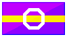
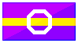

site resources
Click on the headers to see the images.
Pride Flags
Stamps


 



Pixels
Social Media Icons
These were made for my Windows 98 themed page. Might be of use to somebody.

Ketraline Specific
These are my name resources.


Back to Resources